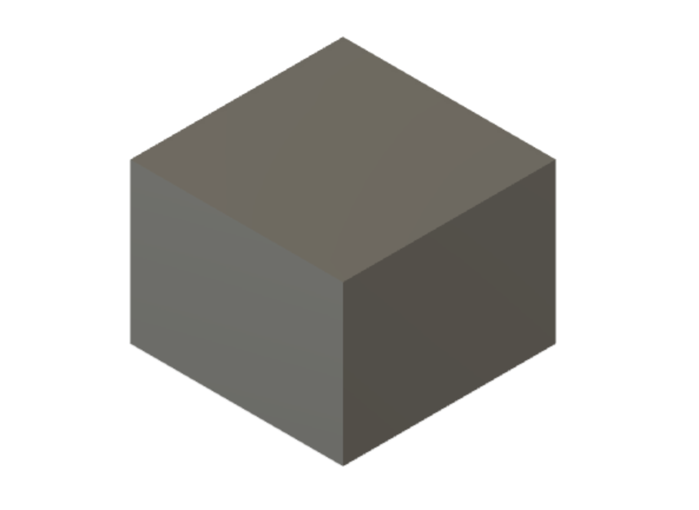
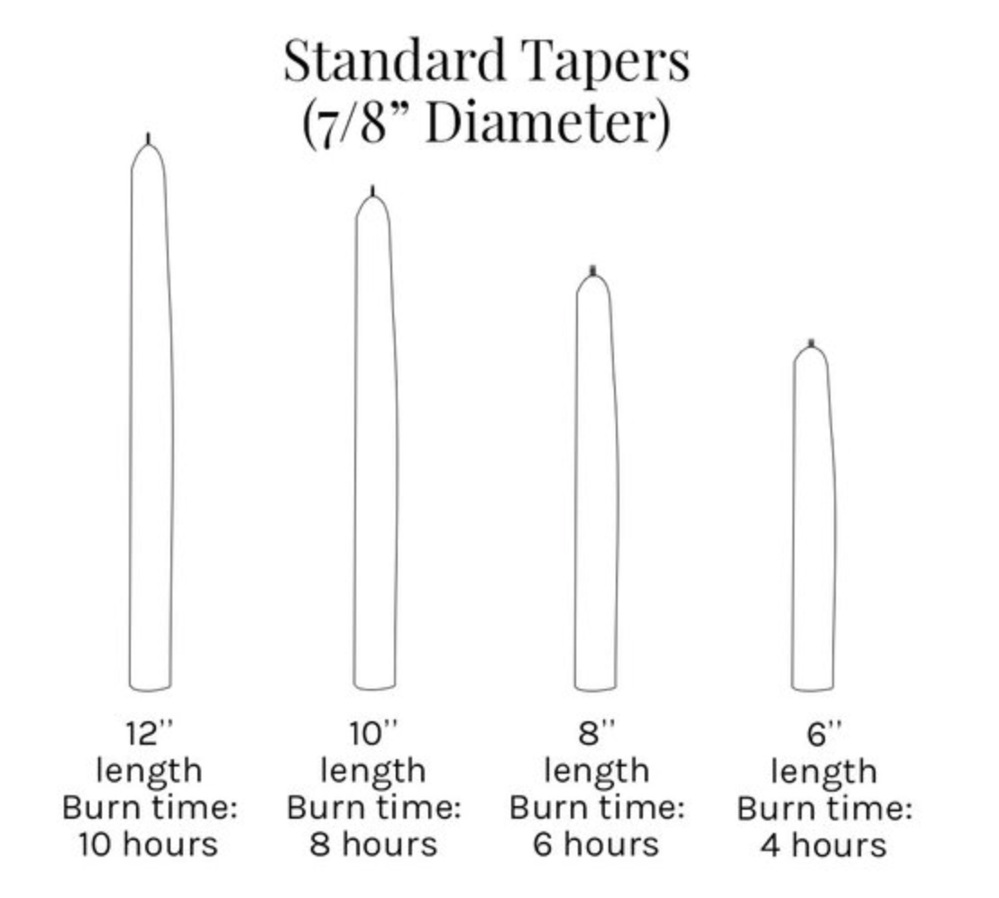
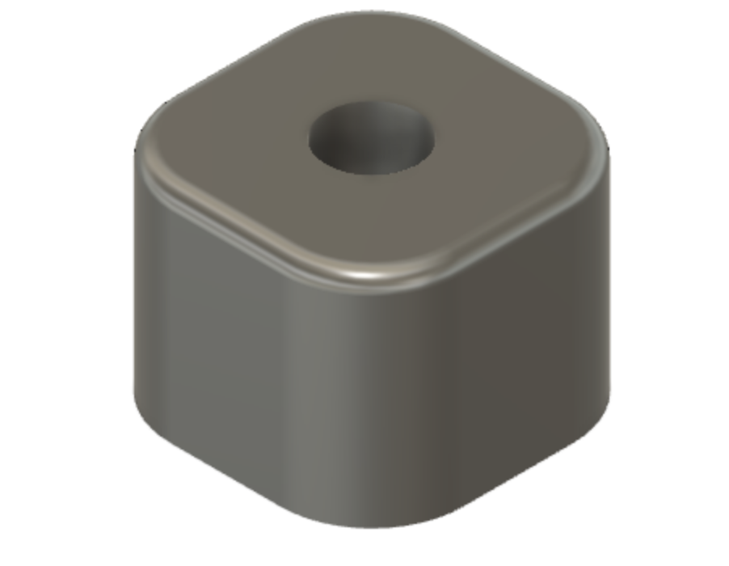

My contribution to part 2 of the final project
The group
Members of the group are Andri Dagur Ófeigsson, Björg Eva Steinþórsdóttir og Guðrún Karitas Blomsterberg.The project
The second part of the final project was to design and mill a cast for any item.
Table 1: My contribution
| Project part | Working time [hours] |
|---|---|
| Finding inspiration | 1 |
| Handing out projects | 0,3 |
| Designing and drawing the item to cast | 4 |
| Documentation | 4,5 |
| Website programming | 3 |
| Total workload | 12,8 hours |
Finding inspiration
The group wanted to make a small item to store on the table made in part 1 of the final project, that was also useful. The result is a candle holder.
Searchwords used: Candle sizes, candle holder.
Designing and drawing the candle holder
The original idea and design was a tealight holder, but due to difficulties in drawing the cast another design was made. Below is the first design.

The drawing of the first design was similar to the latter, but a bit more time consuming. A simpler design, that is also more symmetrical, was made and the process is described below:
The first step is drawing a simple rectangle in Fusion 360, it is then extruded to make a cube.
The next step is to make a hole on the top of the cude, with a 2,5cm diameter an depth of 3cm. This will be where the candle is placed.

The size of the hole was made to fit a standard taper candle, that has a diameter of 7/8 inches.
Finally the edges of the cube are filleted, with a 25mm radius on the side edges, and a 5mm radius on the top edges.


The final result of the candle holder can be seen below, it is a very minimalist design that should fit very well in any room.
The design was then sent to Guðrún, who had the responsibility of drawing the cast and prepearing the toolpaths for it in Fusion360.
Documentation and website programming
My main responsibility was to document the process of the project and putting it up on the Final Project site. My goal was to make the website organized and accessible for those who visit. Documenting all the parts of the project required following along the other group members' work and was quite time consuming, but gave me a better insight to all parts of the project which is always good.
The site for the Final Project is set up as a tab on my website, and how it was made is shown in detail in Project 1 - Making a website. A new *.html file was saved in the repository folder and every time a change was implemented the website was updated as follows.
In the terminal for the local repository type in: $ git add .
Followed by: $ git commit -m 'a describing word of the last change'
Where the ' ' is neccesary.
Next type: $ git push
And the change is visible on the page in a few moments!
Files
This project as a whole was very educational and interesting and I hope the result shows that, even though (as stated on the final project site) we did not get the chance to finish milling and casting the candle holder.